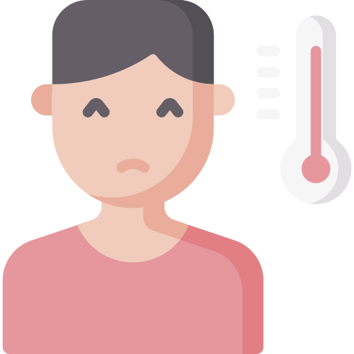

Gejala Virus Corona

Demam

Batuk-batuk

Pilek
Sakit Kepala
Sakit
Tenggorokan
Merasa tidak
enak badan
Tetap jaga kesehatan dan nyawa anda,karena anda berharga bagi mereka yang menunggu anda pulang
Coronavirus merupakan keluarga besar virus yang menyebabkan penyakit pada manusia dan hewan. Pada manusia biasanya menyebabkan penyakit infeksi saluran pernapasan, mulai flu biasa hingga penyakit yang serius seperti Middle East Respiratory Syndrome (MERS) dan Sindrom Pernafasan Akut Berat/ Severe Acute Respiratory Syndrome (SARS). Coronavirus jenis baru yang ditemukan pada manusia sejak kejadian luar biasa muncul di Wuhan Cina, pada Desember 2019, kemudian diberi nama Severe Acute Respiratory Syndrome Coronavirus 2 (SARS-COV2), dan menyebabkan penyakit Coronavirus Disease-2019 (COVID-19).
Seperti penyakit pernapasan lainnya, COVID-19 dapat menyebabkan gejala ringan termasuk pilek, sakit tenggorokan, batuk, dan demam. Sekitar 80% kasus dapat pulih tanpa perlu perawatan khusus. Sekitar 1 dari setiap 6 orang mungkin akan menderita sakit yang parah, seperti disertai pneumonia atau kesulitan bernafas, yang biasanya muncul secara bertahap. Walaupun angka kematian penyakit ini masih rendah (sekitar 3%), namun bagi orang yang berusia lanjut, dan orang-orang dengan kondisi medis yang sudah ada sebelumnya (seperti diabetes, tekanan darah tinggi dan penyakit jantung), mereka biasanya lebih rentan untuk menjadi sakit parah. Melihat perkembangan hingga saat ini, lebih dari 50% kasus konfirmasi telah dinyatakan membaik, dan angka kesembuhan akan terus meningkat.
Demam
Batuk-batuk
Pilek
Sakit Kepala
Sakit
Tenggorokan
Merasa tidak
enak badan

Pergi Ke dokter
Jika sakit

Jauhi Binatang
Peliharaan
Yang sakit
Selalu sedia
Obat

Selalu Mencuci
Tangan

Jaga Jarak
Minimal 2 Meter

Selalu Kenakan
Masker
Hindari Dulu
Berjabat Tangan

Tutup Mulut
Saat Batuk

Ahmad Bayhaqi Saputra
Siswa Di SMKN 1 CIBINONG
.png)


Muhamad Jamil Fanreza
Siswa Di SMKN 1 CIBINONG